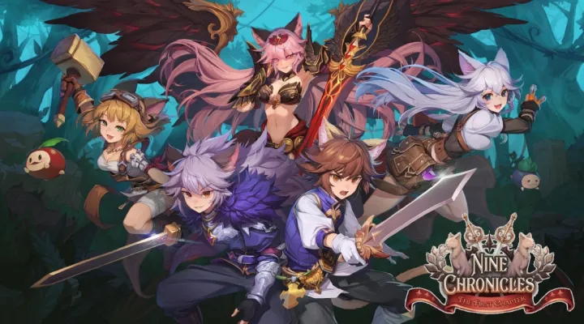
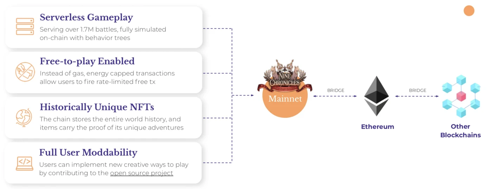
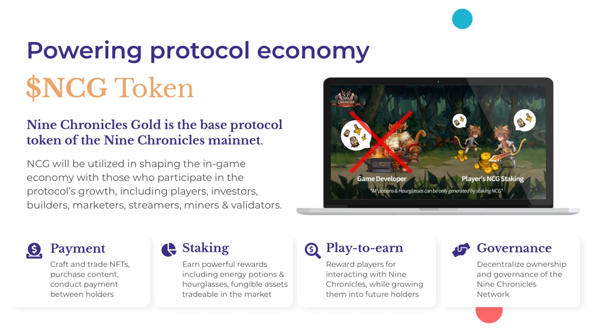

Nine Chronicles Gold
The in-game currency and governance token powering the Nine Chronicles network.

Summary
- Nine Chronicles Gold (NCG) is the main in-game currency and governance token used in the Nine Chronicles network. The supply is limited by design, and players can spend NCG to craft powerful items, trade with other users, challenge each other, and grow. It also powers the world's governance and ecosystem programs.
- Wrapped NCG (WNCG) is a 1:1 NCG-backed ERC-20 token that delivers the power of NCG with the flexibility of an ERC-20 token. Introducing Wrapped NCG →
Key Metrics
- NameNine Chronicles Gold
- TickerNCG
- Initial Circ. Supply25,000,000
- Total Supply1,000,000,000
- Project Websitenine-chronicles.com ↗
What is Nine Chronicles?
Nine Chronicles is an open source, decentralized RPG set in a fantasy world — powered by its players, and supported by a complex economy where supply and demand are the greatest currency.
Why 100% decentralized? Is it important?
We want to create a whole new fantasy world that doesn't depend on the game company — an online world that can exist as long as there are players, and a world that is fully owned by the community. That's why we made Nine Chronicles 100% fully decentralized. Every action is saved on-chain so that you can verify the whole world's status by yourself. To achieve this mission, we've built Libplanet, a new distributed ledger technology library for implementing P2P MMO games. Nine Chronicles is the first game based on Libplanet.
Screenshots
Nine Chronicles Blockchain
Nine Chronicles became the world's first fully decentralized online RPG when we launched the mainnet in October 2020. Nine Chronicles Blockchain is an independent Layer 1 network operated solely for Nine Chronicles.

Network at a glance
- 400kRegistered users
- 30kDaily active users
- 110kMonthly active users
- 300kDaily transactions
- 2.5M+On-chain battles
- 1M+Player-crafted NFTs
- 80k+NFTs traded on-chain
- 10sBlock target time
Source: @NineChronicles
Economics and NCG Usage

Nine Chronicles Gold (NCG) is the base token used in the Nine Chronicles network. Players can spend NCG to craft powerful items, trade with other users, challenge each other, and accelerate growth, while also participating in governance and staking.
As a free-to-play game, NCG isn't necessary in the beginning stages of exploration, but the game is designed so that NCG's needs are gradually increased as players grow more powerful. Eventually, players can stake NCG to earn potions and unique items which can be used by them or circulated to other users for profit.
Spending NCG
- Accelerating GrowthEach action created by a user is capped by an energy gauge which refills every 8 hours. To refill energy faster, players may purchase energy potions from the public market. Crafting items also takes a set amount of time, which can be accelerated by purchasing hourglasses from the market.
- Crafting ItemsCrafting equipment above a certain level requires a certain amount of NCG, and the more competitive the equipment, the higher the requirement.
- Trading ItemsNCG is used to sell or purchase items from the public market. Any player can list items on the market, and get paid when another player makes a purchase. There is a set % fee for trading items on the market, and the fee is currently locked. There is a plan to circulate the fee back to NCG holders.
- Challenging PlayersPlayers pay an entrance fee in NCG to enter a battle arena to challenge other players. The pool created from the entrance fee is split among the winners each week.
Staking NCG
- Earning Tradeable In-Game RewardStaking the main token for periodic in-game reward is a key feature of Nine Chronicles. Instead of purchasing items off the market, players can stake their token and receive energy potions, hourglasses, and other exclusive consumables periodically. This effectively reduces the surplus supply of NCG and gives the players a share of the pie by allowing them to create in-game items that can be sold.
Distribution
The total supply of NCG is fixed at 1,000,000,000 tokens. Each allocation has its own purpose, lockup schedule, and category. Click any row below to expand its detailed terms.
| Allocation | Category | Amount (NCG) | % of supply | |||||||||||||||
|---|---|---|---|---|---|---|---|---|---|---|---|---|---|---|---|---|---|---|
| Presale | Presale | 30,000,000 | 3.0% | |||||||||||||||
DescriptionFor the earliest supporters (April 2020). Lockup1/24 distributed at NCG TGE, rest evenly distributed daily over 23 months. |
||||||||||||||||||
| Presale | Presale | 20,000,000 | 2.0% | |||||||||||||||
DescriptionFirst crowdfunding (July / Sept 2020). Lockup— |
||||||||||||||||||
| Mining/Staking | Mining/Staking | 250,000,000 | 25.0% | |||||||||||||||
DescriptionMining and staking reward for network participants. LockupDistributed based on a halving release schedule (10 NCG per block at a 10-second target, halving every 4 years; will be distributed at a similar rate after PoS migration). Reward structureBlock generation cycle: 10 seconds · Initial block reward: 10 NCG · Halving: every 4 years
|
||||||||||||||||||
| Content / Community | Content / Community | 250,000,000 | 25.0% | |||||||||||||||
DescriptionContent and ecosystem fund for developers and creators. Mostly undeployed; major deployment will start after Nine Chronicles governance setup. LockupUnlocked at the same rate as Mining / Staking reward. |
||||||||||||||||||
| Foundation | Foundation | 250,000,000 | 25.0% | |||||||||||||||
DescriptionNine Chronicles Ltd team allocation. LockupEvenly distributed daily over 72 months. |
||||||||||||||||||
| Ongoing Sale | Ongoing Sale | 52,000,000 | 5.2% | |||||||||||||||
DescriptionPost-mainnet launch partnership round (Aug 2021). Lockup1/24 distributed at WNCG TGE, rest evenly distributed monthly over 23 months. |
||||||||||||||||||
| Ongoing Sale | Ongoing Sale | 2,000,000 | 0.2% | |||||||||||||||
DescriptionLaunchpad sale for WNCG introduction (Aug 2021). Lockup— |
||||||||||||||||||
| Ongoing Sale | Ongoing Sale | 46,000,000 | 4.6% | |||||||||||||||
DescriptionMethod for players from multiple platforms and new partners to onboard the network. Currently unsold; sales will be communicated. LockupEvenly distributed daily over 24 months. |
||||||||||||||||||
| Partnership | Partnership | 30,000,000 | 3.0% | |||||||||||||||
DescriptionGaming, publishing, and crypto exchange partnerships. Lockup1/24 distributed at the transaction date, rest evenly distributed monthly over 23 months. |
||||||||||||||||||
| Others | Others | 40,000,000 | 4.0% | |||||||||||||||
DescriptionAirdrop, marketing partnership, and initial play-to-earn pool. LockupUnlocked after 1 month and evenly distributed monthly over 5 months. |
||||||||||||||||||
| Others | Others | 30,000,000 | 3.0% | |||||||||||||||
DescriptionSpare reserve for special purposes. LockupUnlocked after 1 month. Will not be circulated by default, but prior notice will be made to the community in the required circumstances. |
||||||||||||||||||
| Total | 1,000,000,000 | 100.0% | ||||||||||||||||
Live distribution data
Funding and Partnerships
Roadmap
Source Code & Documentation
Articles and Media Mentions
- CoinDeskPlanetarium Labs poised Nine Chronicles for winter-proof sustainable growth
- CointelegraphNine Chronicles announces mint date for its NFT project, De:Centralized Cat
- DecryptUbisoft-backed startup launches 'evolutionary' decentralized RPG
- VentureBeatPlanetarium nabs $2.6M for decentralized RPG Nine Chronicles
- TheGamerNine Chronicles Is An MMO That Runs On A P2P Network, Giving Players Full Control
- Presse-Citron (FR)Nine Chronicles, un RPG gratuit et totalement décentralisé via la blockchain
- CoinDeskEvery Game This South Korean Startup Makes Has Its Own Blockchain
NCG & WNCG Icons
Free to use for exchange listings, integrations, and editorial coverage.
{kind=link}
{kind=link}
{kind=link}
{kind=link}
{kind=link}
{kind=link}